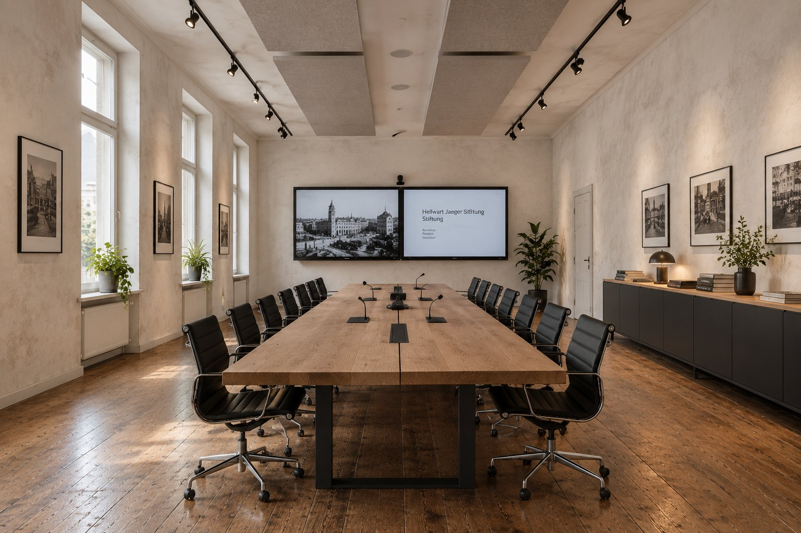
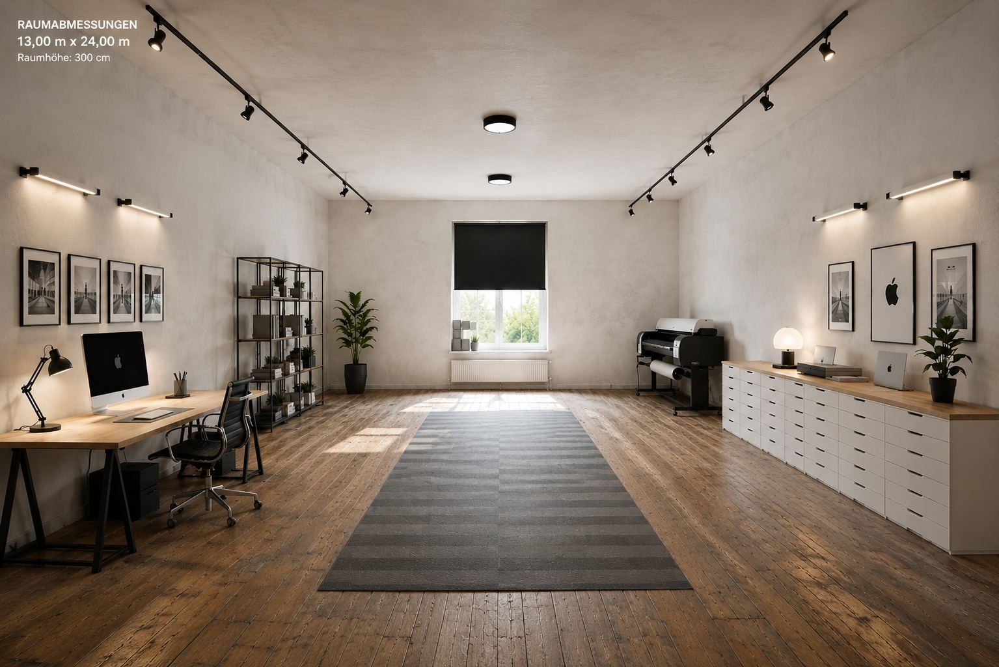
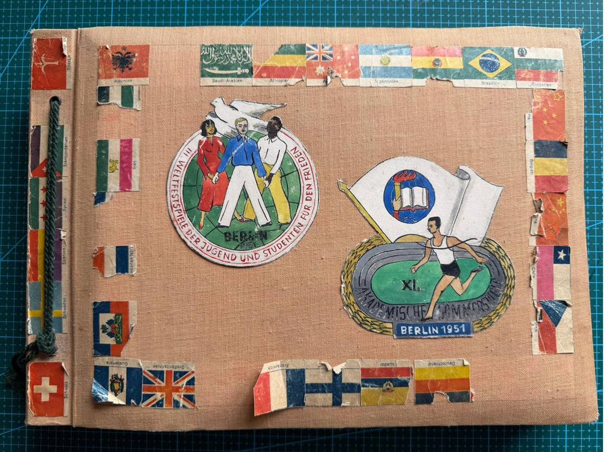
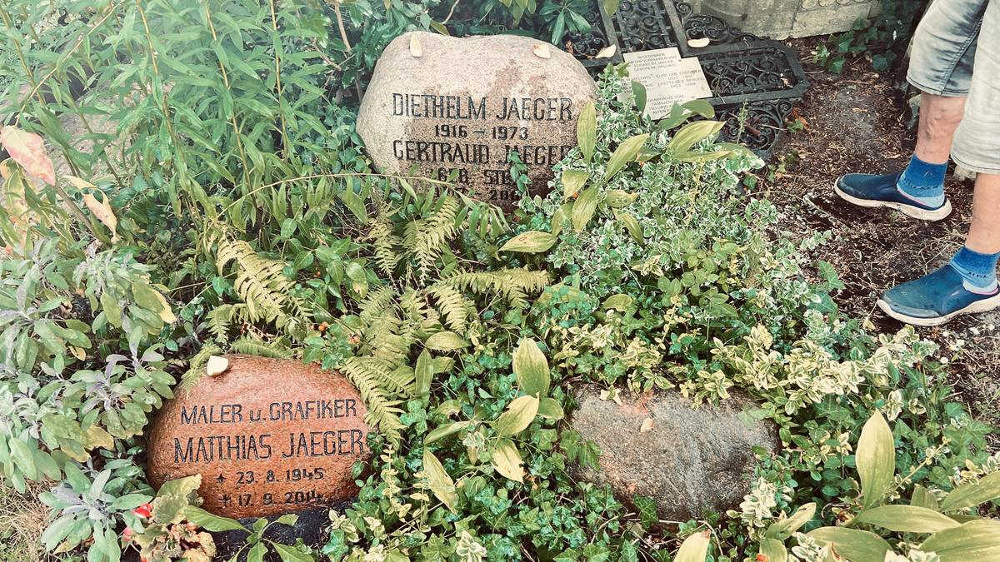
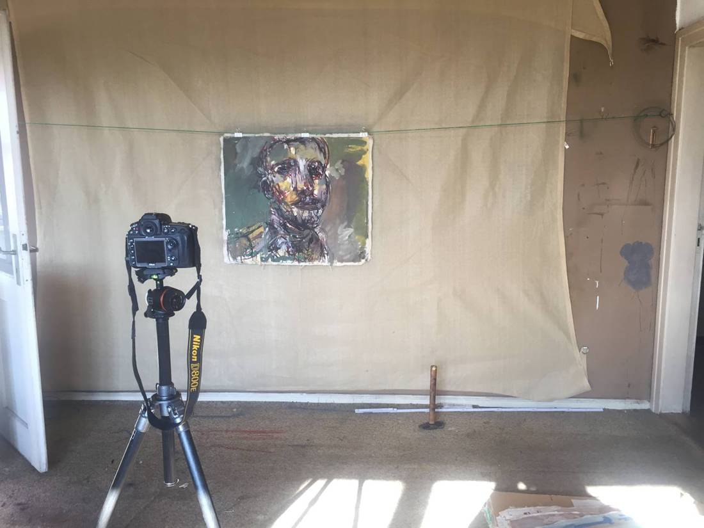

Jaeger Stiftung
Kunst · Denkmalschutz · Heimat



Weiterscrollen
Kunst · Denkmalschutz · Heimat

Eine Familie, die Neubrandenburg seit 1880 mitgebaut hat – mit Beton, Bauschmuck, Bildhauerei, Lyrik und Malerei. Die Stiftung bewahrt dieses Erbe: ein denkmalgeschütztes Haus in der Morgenlandstraße, einen Kunstnachlass von über 30.000 Blättern und Bildern und die Erinnerung an eine Stiftung, die schon 1912 existierte.

In Kooperation mit Culture Heritage MemoryLabs gUG · Stadtarchiv Neubrandenburg · Stiftungsaufsicht Schwerin · Stadt Neubrandenburg · Kunstsammlung Neubrandenburg · Kupferstichkabinett Dresden
Die Stiftung verfolgt ausschließlich gemeinnützige Zwecke. Die Digitalisierung des Nachlasses ist in § 2 Abs. 2 ausdrücklich als Mittel der Zweckverwirklichung genannt.
Volle Satzung lesen (PDF) Stand 25.02.2026 · Arbeitsentwurf — Grundstockvermögen (§ 4) wird mit der Anerkennung final beziffert.Erhalt des Hauses Morgenlandstraße 35, von Vorgarten, Zaun und Familiengrab.
Erschließen, ausstellen und vermitteln des Werks von drei Künstlergenerationen.
150 Jahre Stadt-, Bau- und Familiengeschichte Neubrandenburgs.
Lernort für Handwerk, Archivarbeit und Bildkultur.
Angebote für junge Menschen – u. a. ein geplantes Malbuch.
Das Haus als Ort der Begegnung – Konzerte, Lesungen, Nachbarschaft.
Mittelbeschaffung für andere steuerbegünstigte Körperschaften. Mindestens zwei Drittel des Vermietungsgewinns fließen in die gemeinnützigen Zwecke; der Rest darf an Stifter, nächste Angehörige bzw. Erben gehen.
Wird die Satzung zu Lebzeiten des Stifters nicht genehmigt, gilt sie über das Testament als Stiftung von Todes wegen nach § 83 BGB. Das nach dem Ableben verbleibende Kapital fließt der Stiftung zu – nicht als Grundvermögen, sondern als Ertragsmittel.
Tippe auf einen Eintrag für Details.
Die Familiengeschichte reicht rund 150 Jahre zurück – mit Bezügen zu Philipp Stein und Theodor Heuss, die Gegenstand der Provenienz- und Tiefenerschließung sind.
 Wilhelm Jaeger
Wilhelm Jaeger Prof. Dr. Philipp Stein
Prof. Dr. Philipp SteinEin handschriftliches genealogisches Werk (S. 227–238, samt Nachkommenschaftsblatt von 1975) verfolgt die mütterliche Abstammung lückenlos bis nach Schlesien zurück.
Tanten und Onkel von Hellwart, Matthias und Heiner Jaeger, Kinder von Philipp Stein & Emma Jüngst.
Quellen: 17 fotografierte Buchseiten 227–238 („Stammbaum der Familie Christoph Sternicke=Sternitzki, z.T. nach Gustav Stein“) sowie handschriftliches Nachkommenschaftsblatt (HP, 1975); Helmut, Paul, Tilmann & Anton Jaeger aus separaten Stiftungsunterlagen ergänzt. Vollständig übertragen 21.09.2026.
Wo die Nachkommen von Christoph Sternicke (um 1705) lebten und starben — 43 Orte, 69 zugeordnete Personen aus dem Stammbaum. Kreisgröße = Anzahl Personen je Ort. Suchen, ziehen, zoomen, antippen für Details — inkl. Link zum Wikipedia-Artikel des jeweiligen Landes. Einzelne Namen mit eigenem, geprüftem Wikipedia-Artikel sind zusätzlich direkt verlinkt (bislang recherchiert: Philipp Stein).
Schwerpunkt: Wiesbaden/Rhein-Main und Braunschweig/Wolfenbüttel (Photographen-Linie) · Auswanderung/Vertreibung nach St. Petersburg, Moskau und in den Ural durch die Port-Nachkommen · Kriegsverluste 1914–1945 in Frankreich, Polen und Russland. Wikipedia-Verweise verlinken auf die englischsprachigen Länderartikel (dort über die Sprachauswahl links auch in anderen Sprachen, inkl. Deutsch, abrufbar).
Jeder Balken ist ein Leben — von Christoph Sternicke (um 1705) bis heute. Tippen zeigt Details, Eltern und Kinder; die Legende filtert nach Berufsfeld. Als eigene Seite öffnen ↗
Ein selbst gestaltetes Album aus dem Familienbestand: ein mit Länderflaggen beklebter Einband, handschriftlich abgeschriebene Liedtexte, Pressefotos und eigene Schnappschüsse von Bauten und Sportstätten. Diethelm und Gertraud Jaeger, die Eltern von Hellwart, Matthias und Heiner, erlebten die III. Weltfestspiele und die XI. Akademischen Sommerspiele hautnah mit und hielten sie mit spürbarer Sorgfalt fest — ein persönliches Zeitdokument, entstanden mitten in den politischen Umbrüchen der jungen DDR.
„Jugend aller Nationen, uns vereint gleicher Sinn, gleicher Mut …“
Aus dem Liedtext im Album, handschriftlich neben Pressefotos jubelnder Menschenmengen eingeklebt.


Teil des Nachlasses Jaeger, derzeit in Digitalisierung und Erschließung durch die Culture Heritage MemoryLabs gUG.
Jeder in Neubrandenburg kennt den Mudder-Schulten-Brunnen, aber kaum jemand seinen Schöpfer. Hellwart Jaeger holt seinen Großonkel zum 125. Geburtstag aus dem Vergessen: die Ausbildung für die Bauschmuckwerkstätten der Firma Wilh. Jaeger KG, ein Werk aus Stein, Bronze, Keramik und Silber, dann NS-Zeit, Krieg, Enteignung und die späten Jahre in Marburg.
Wilhelm Hans Jaeger kam 1888 als zweiter Sohn des Baustoffhändlers Wilhelm Jaeger zur Welt. Der Vater plante und finanzierte seine Ausbildung zum Bildhauer mit einem klaren Ziel: Der Sohn sollte die Bauschmuckwerkstätten des Familienunternehmens künstlerisch leiten. Es folgten ein Volontariat in Berlin, die Kunstgewerbeschule Charlottenburg und die Münchner Akademie bei Balthasar Schmitt, unterbrochen durch den Ersten Weltkrieg.
Ab 1920 arbeitete er vormittags im Betrieb und entwarf Kamine, Wandbrunnen und Wappen für Gutshäuser. Daneben war er freischaffend. Er engagierte sich im Kunstverein, im Mecklenburgischen Künstlerbund und in der Johannisloge „Zum Friedensbunde“.
Im Mittelpunkt steht der Reuterbrunnen von 1923. Den Werdegang erzählt W. H. J. in einem längeren Selbstzeugnis. Daneben stellt der Autor Grabmale, Porträtbüsten, Tierplastiken, Kleinkeramik und Silberschmuck vor.
Ein roter Faden ist der Verlust: Grabmale verschwanden bei der Friedhofsbebauung nach 1965, der „Jaegerbrunnen“ beim Brückenbau, Gartenplastiken 1953 im Sperrgebiet. Eine Putte ist seit 1990 verschollen. Der Beitrag ist damit auch eine Suchliste.
Teil 2 zeigt, wie die Politik das Werk prägte. 1934 endete der Kunstverein unter NS-Druck. Freimaurerei und Bekennende Kirche machten die Familie verdächtig. Nach 1945 verlor er Wohnung und Firma. Ab 1958 lebte er von Gebrauchskeramik und Restaurierungen. 1962 wurde das Grundstück enteignet, 1963 ging er in den Westen.
Vorarbeiten: Ausstellung des Regionalmuseums 1999 „Neubrandenburger bildender Künstler von 1890 bis 1945“; Leihgaben 2010 an die Ernst Barlach Stiftung Güstrow („Schönheit pur“): Faungruppe, Truthahn, Büste Otto Wolfgang Spieß.
Der „kleine Gassenbube“ kommt bei Reuter nicht vor. Er ist eine Zutat des Bildhauers.
| Werk | Jahr | Material | Ort / Verbleib | Status | Abb. |
|---|
14 Orte aus dem Register, von Neubrandenburg bis Marburg. Antippen für Details, dazu Links zu Google Maps und OpenStreetMap; wo öffentlich zugängliche Abbildungen bekannt sind (Wikipedia/Commons), sind sie mitverlinkt.
Vereinfachte, schematische Umrisslinie; Positionen anhand dokumentierter Orte aus dem Register und öffentlicher Geokoordinaten, im selben Koordinatensystem wie die Weltkarte oben. Ploetz, Zollhaus/Hessen, Oberursel und Istanbul werden im Register genannt, sind hier aber mangels sicherer Lokalisierung nicht eingetragen.
Historische „Jäger-Stiftung“ zugunsten der Johannisloge
Verbindung zur Stiftung von 1912 (Haus Elisabeth) prüfen. Logenarchiv anfragen.Suchliste der verschollenen Werke
Jaegerbrunnen, schwarzer Panther, Putte Unger, Grabsteine Walter Jaeger und Grössner, Gartenplastik Augustastr. 12Werke im Regionalmuseum abgleichen
Faungruppe, Truthahn, Fohlen, Büsten Spieß und Unger. Negativ-Schenkung Renate Rauch von 1988Grabdenkmale Neuer Friedhof
Denkmalliste der Unteren Denkmalschutzbehörde anfordern und Zuschreibung klärenQuerverweise im Heft
Beiträge Szczesiak (Abb. 1, 4, 8, 12, 14, 19, 22, 23) und W. Kern (Plakette Wolfgang)Soldatenkopf vom Belvedere
Nach 1993 bei einem Einbruch im Lager des Denkmalschutzbetriebs (Kleine Wollweberstraße) verschwunden. Suchmeldung prüfenRundbriefe der Altschülerschaft Nr. 4, 14 und 1976
Aufsätze von W. H. J. über Reuterbrunnen und Firma sowie die Storchengeschichte. Dazu Carolinum 1966/67Familienbestand erfassen
Panther, Katze, Hasen, Zebra, Krippe, Fangelturm-Fliesen, Obstschale, Frauenakt, Madonna (Remer), Eule (Werderstr. 2)Hauszeichen Ihlenfelder Vorstadt
Reliefplatten an den Wohnhäusern fotografisch erfassenGrabmal in Teterow
Der beigelegte Zeitungsausschnitt zeigt eine Putte mit Urne, sehr ähnlich dem Grabmal Wagner. Zuschreibung vor Ort prüfenErdgeschosssaniert, vermietet seit 01.08.2023
vermietet1. Obergeschossteilsaniert
in ArbeitBeide OG voll vermietbarwartet auf Fördermittel für Fenster & Fernwärme
2026/27Nach Literatur zum neuen Stiftungsrecht gelten 500.000 € Grundvermögen oder 10.000 € Jahresertrag als genehmigungsfähig. Die Satzung argumentiert daher über Grundvermögen plus Ertrag – Ziel: 10.000 €/Jahr aus Haus und künftig vermieteter Eigentumswohnung.
Denkmalgeschütztes Familiengrab auf dem Neuen Friedhof (PB3 Nr. 6). Es vereint mehrere Generationen – von Diethelm und Gertraud Jaeger über Matthias und Horst Jaeger bis zu Wilhelm und Elisabeth Jaeger geb. Hellwig. Ein schmiedeeisernes Grabkreuz der Vorfahrenlinie Hellwig (Karl W. Hellwig, Elise geb. Größner, Lisette geb. Bergell) wurde vom Alten Friedhof hierher übertragen. Die Stiftung soll Rechtsnachfolgerin für Grabrechte, Pflege und Unterhaltung werden.

Werkaufnahmen vom Februar 2015 aus dem Atelierbestand in Neubrandenburg. Titel und Datierungen werden im Zuge der Erschließung ergänzt.
Gesamter Werkbestand Matthias Jaeger im Bildarchiv ↗Zweiunddreißig Ölskizzen auf ungespannter Leinwand, aufgenommen im Februar 2015 im Atelier in Neubrandenburg. Die Titel sind Arbeitstitel und werden bei der Erschließung ersetzt.
Alle Skizzen und Studien im Bildarchiv ↗Spiralblöcke quer, etwa A4: auf der einen Seite die Zeichnung, auf der anderen die Schrift. Porträts, Figurenstudien, Materialnotizen – und dazwischen Rio, Kyoto, Agenda 21. Neunzehn Blätter aus den Büchern, dem Depot und vom Familiengrab.
Matthias Jaeger im Bildarchiv ↗Die Überschrift steht wörtlich in einem der Bücher – sie beschreibt, was diese Bände sind: Zeichenheft, Notizblock und Kalender in einem Band. Titel sind Arbeitstitel; Lesungen der Handschrift und Datierungen sind vorläufig und bis zur archivischen Erschließung nicht belegt.

Culture Heritage MemoryLabs gUG (anerkannt November 2025, Neubrandenburg) erbringt Digitalisierung und technische Umsetzung seit 01.11.2025. Von August 2024 bis September 2025 lag die Arbeit bei der Berlintapete GmbH. Die Kosten der Vorbereitung laufen als Stiftungsvorkosten.
Nikon D850, Alpa-Reprosystem, Hasselblad, Fuji, Studioeinrichtung und vier Macintosh-Arbeitsplätze. Bürofläche und künftige Stiftungswohnung in Neubrandenburg stellt der Stifter bei.
Laufende Erschließung mit Suchfeld, Kategorien und Foto-/PDF-Upload (Kamera direkt vom Smartphone) — Zugriff für das Team. Zur Datenbank ↗
Grafiken, Gemälde, Zeichnungen und Fotografien aus dem Jaeger-Nachlass — laufend erweitert, öffentlich einsehbar.
„Bestätigt durch Großherzog Adolf Friedrich von Mecklenburg.“
1912 aus dem Vermögen der Wilhelm Jaeger KG ausgestattet. Nach § 8 der Satzung von 1912 war der Magistrat Stiftungsverwalter. Die Stiftungsaufsicht Schwerin bestätigt den Status „ruhend“ – nie formell aufgelöst.
Enteignung durch eine nach dem damals geltenden BGB unzuständige Behörde. Die Stadt verkaufte später das 932 m² große Stiftungsgrundstück mit Sechsfamilienhaus an einen Investor – Rückgabe in Natur ist nicht mehr möglich, nur Entschädigung.
Eine Reaktivierung der historischen Stiftung wird geprüft, um ihr Erbe in die neue Jaeger Stiftung einzubinden. Das Verfahren läuft; Details werden hier ergänzt, sobald Entscheidungen vorliegen.
Satzung beschlossenFassung vom 25.02.2026
fertigFeststellung der SatzungsmäßigkeitFinanzamt, § 60a AO
fertigVermögensausstattung angemeldetJustizministerium Schwerin
fertigAnerkennungsverfahrenStiftungsaufsicht + Kanzlei in München
läuftDigitalisierung des Nachlassesseit Nov. 2025 durch MemoryLabs gUG
läuftVorstandsvorsitz besetzenfachlich geeignete Person gesucht
offenEinbringung & Versicherung der WerkeWerke im Eigentum Heiner Jaegers sind nicht versichert
offenSatzung redaktionell bereinigenNamensschreibweise „Radomski“ an drei Stellen; heute rechnet die MemoryLabs gUG ab
offenFördermittel Fenster & FernwärmeVoraussetzung für volle Vermietung
offenMalbuch & Biografie Matthias JaegerWerke an Archiv Bildende Kunst Mecklenburgische Seenplatte e. V.
geplantStiftungsrat: Hellwart Jaeger (Kontrollfunktion).
Vorstand (ehrenamtlich): Sohn und Bruder nach Anerkennung; Anton Jaeger folgt Heiner nach.
Prof. Dr. B. Fahrenhorst (Wissenschaft) · Prof. C. Gansel (Germanistik) · Cellistin C. Börngen (Veranstaltungen)
Ecovis Baltic, Neubrandenburg (Steuerberatung) · RA Wellner, Greifswald · Kanzlei von Trott, Berlin (Stiftung 1912) · Stadtarchiv Neubrandenburg (Dr. Nase) · Museum Neubrandenburg · Culture Heritage MemoryLabs gUG (Dienstleister)
Impressum, Datenschutz, Hinweise zu eingebetteten Inhalten und ein Vermerk zu den Bildrechten des hier gezeigten historischen Materials — einzeln auf- und zuklappbar.
Angaben gemäß § 5 TMG / § 18 Abs. 2 MStV, für die im Aufbau befindliche Jaeger Stiftung. Da die Stiftung sich noch im Anerkennungsverfahren befindet, ist die verantwortliche natürliche oder juristische Person unten noch nicht final benannt.
Als Diensteanbieter sind wir gemäß § 7 Abs. 1 TMG für eigene Inhalte nach den allgemeinen Gesetzen verantwortlich; für verlinkte externe Inhalte ist stets der jeweilige Anbieter verantwortlich. Wir sind zur Teilnahme an einem Streitbeilegungsverfahren vor einer Verbraucherschlichtungsstelle nicht verpflichtet und nehmen daran nicht teil.
Verantwortlicher im Sinne der DSGVO: Jaeger Stiftung, Morgenlandstraße 35, 17033 Neubrandenburg, vertreten durch Hellwart Jaeger; Kontakt: aramradomski@me.com
Diese Seite ist eine statische Präsentation ohne Server-Backend: Es werden keine Trackingcookies, keine Analyse-Tools und keine Kontaktformulare eingesetzt. Beim Seitenaufruf erhebt der Hosting-Anbieter automatisch Server-Logfiles (Browsertyp, Referrer-URL, Uhrzeit der Anfrage, IP-Adresse); diese werden nicht mit anderen Quellen zusammengeführt und spätestens nach sieben Tagen gelöscht.
Bei Kontaktaufnahme per E-Mail werden die mitgeteilten Daten ausschließlich zur Bearbeitung der Anfrage gespeichert und gelöscht, sobald der Zweck entfällt bzw. gesetzliche Aufbewahrungsfristen es zulassen.
Ihre Rechte: Auskunft (Art. 15 DSGVO), Berichtigung (Art. 16), Löschung (Art. 17), Einschränkung der Verarbeitung (Art. 18), Datenübertragbarkeit (Art. 20), Widerspruch (Art. 21) sowie Beschwerde bei der Aufsichtsbehörde — für M-V: Landesbeauftragter für Datenschutz und Informationsfreiheit Mecklenburg-Vorpommern.
Historische Personendaten im Archivmaterial: Diese Website veröffentlicht im Rahmen der Stiftungszwecke (Denkmalpflege, Heimatkundeforschung, Kunst und Kultur) historische Dokumente, Fotografien und Filmmaterial, die auch personenbezogene Daten verstorbener und lebender Familienmitglieder enthalten können — im überwiegenden öffentlichen und wissenschaftlich-dokumentarischen Interesse an der Regional- und Familiengeschichte. Betroffene bzw. deren Angehörige können der Veröffentlichung einzelner Inhalte jederzeit formlos per E-Mail widersprechen.
Beim produktiven Betrieb auf eigenem Hosting sind Hosting-Provider, Server-Logs und IP-Verarbeitung gesondert zu dokumentieren; diese Erklärung ist vor Live-Schaltung mit der Kanzlei abzustimmen.
Diese Website verwendet ausschließlich technisch notwendige Cookies bzw. lokale Speichertechnologien, die für den Betrieb der Seite erforderlich sind. Dafür ist gemäß § 25 Abs. 2 TTDSG keine Einwilligung nötig.
Fotografien, Dokumente, Gemälde und Objekte aus dem Nachlass der Familie Jaeger werden mit Zustimmung der Rechtsnachfolger gezeigt; Rechteinhaber ist, soweit nicht anders vermerkt, die Jaeger Stiftung bzw. deren Rechtsvorgänger.
Abgebildete Gemälde und Grafiken von Matthias Jaeger (1945–2014) werden mit Zustimmung seiner Söhne und Erben Paul und Tilman Jaeger sowie im Einvernehmen mit dem Nachlassverwalter gezeigt; eine Weiterverwendung außerhalb dieser Website bedarf gesonderter Zustimmung.
Zeitgeschichtliches Filmmaterial (u. a. Aufnahmen 1973–1990) wird von Aram Radomski als Urheber bzw. mit Zustimmung der jeweiligen Urheber und abgebildeten Personen zur Verfügung gestellt. Bei erkennbaren Personen wird das Recht am eigenen Bild (§ 22 KUG) beachtet; Aufnahmen von zeitgeschichtlicher Bedeutung werden nach § 23 Abs. 1 Nr. 1 KUG gezeigt.
Abgebildete Personen bzw. deren Angehörige können der weiteren Veröffentlichung eines konkreten Bild- oder Filmausschnitts jederzeit formlos per E-Mail widersprechen; die betreffenden Inhalte werden nach Prüfung entfernt oder anonymisiert. Eine Übernahme von Texten, Bildern oder Filmausschnitten dieser Website für eigene Zwecke ist ohne vorherige schriftliche Zustimmung nicht gestattet.
Datierung & Aufnahmenachweis einzelner Fotografienu. a. Gartenfest-Foto, Brunnenfoto
offenSignatur/Zuordnung der Bronzebüsten & Ahnenbildnissevor Veröffentlichung einzelner Objektseiten abschließend zu klären
offen